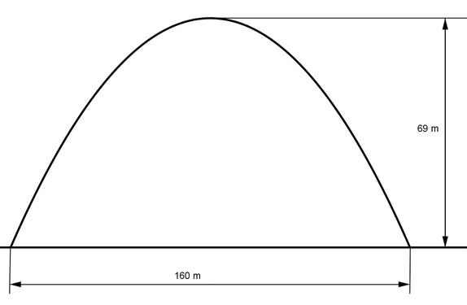

Aufgabe 117 Der dargestellte Brückenbogen kann durch eine Parabel der Form f(x) = ax2 beschrieben werden. Wie groß ist a?  Der Koordinatenursprung liegt im Scheitelpunkt der nach unten geöffneten Parabel --> a muss negativ sein. Der Punkt A hat die Koordinaten (80|-69) In f(x) = ax2 eingesetzt: -69 = a * 80² - 69 = a * 6400 |:6400 a = -69/6400 f(x) = -(69/6400)x2